The Spread of Western and Eastern Viral Trends
02.221 Making Maps I: Introduction to Spatial Analysis, Data Visualization and Map Design
This is the final report by We Love Poorthuis for the Making Maps course. Viral trends have steadily become an integral part of the globalised world. In this report, we want to see how much influence the western world has over the eastern world and vice versa. We will take a look at 5 different trends to study how they spread, and rationalize the factors that separate each of them.
Motivation
Data is the new gold. In recent times, we have began to see the truth of this statement. Viral trends and misinformation have allegedly been used to influence the outcome of the recent 2016 USA presidential elections. We believe that a better understanding of virality may help in combatting fake news and misinformation.
The hypothesis
Viral trends that originate from the west have more influence than viral trends that originate from the east.
Influence: The proportion of a region that participates in a viral trend that originated from the opposite region.
Structure of the Report
-
Data
This portion of the report will explain where we sourced for the data, how we selected our samples to use for the report, and a few definitions and clarifications of concepts we use in our study.
-
Trends
The trends portion of the report gives a basic description and overview of a trend that we have analyzed. It also provides a visualisation of the spread of the trend.
-
Analysis
This analysis portion will dive deeper into categorical factors of viral trends and the rationalization of our findings.
-
About Us
This portion displays basic information about the members of this project.
-
References
The references portion will detail the tools we used, and credit the sources for information that we used.
Data
The dataset we used was a twitter databank provided by our professor Ate Poorthuis. We chose to use data form twitter as it was accessible, and it provided us with location and time details which was essential for our project.
Hypothesis: Viral trends that originate from the west have more influence than viral trends that originate from the east.
How we defined the west and the east was by splitting the world map along the 40th Meridian East. The image below shows all the active users of Twitter in the world. As seen from the image, by splitting along the 40th Meridian East, we can easily segregate eastern countries from western countries. Although the Middle East and African are not in their correct regions, we can omit them from this study as the number of twitter users in those areas are negligible.
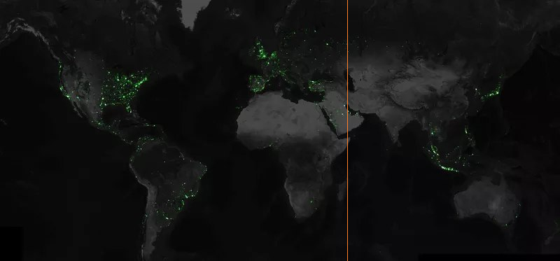
Analysis
Categories and Comparison
From the data as well as the CARTO graphs, we discovered some interesting data amongst the trends. These can be summarised into 3 categories:
- Recursive/Non-recursive
- Growth Rate
- Decay Rate
Recursive/Non-recursive
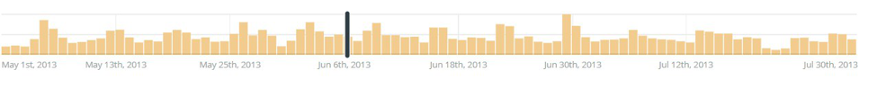
Above is the histograms of the number of tweets over time, it shows the number of tweets fluctuating periodically. A closer analysis revealed that the ‘ebbs and flow’ of tweets correspond to the weekly release of new Attack on Titan episodes.
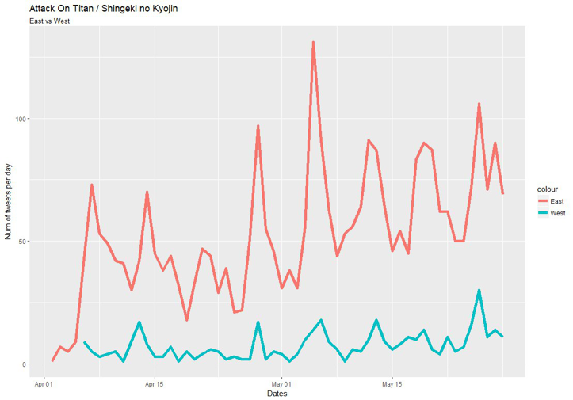
The graph above shows that both Eastern and Western twitter users are responsible for the periodicity of the tweets, although majority of the tweets for this trend come from eastern countries.
There are also trends that are non-recursive such as the Harlem Shake which does not occur again after it hit its peak trend.
Growth Rate
We discovered that western trends have a greater growth rate than eastern trends. This means that they take less time on conception to hit “global status”. For instance, in the Harlem Shake trend and the Dress challenge, both managed to hit global status in less than a week.
Decay Rate
Though western trends have a faster growth rate, they also have a greater decay rate than their eastern counterparts. For instance, Gwiyomi stayed around for 2 months, while the Dress disappeared as soon as it came, lasting only about a week.
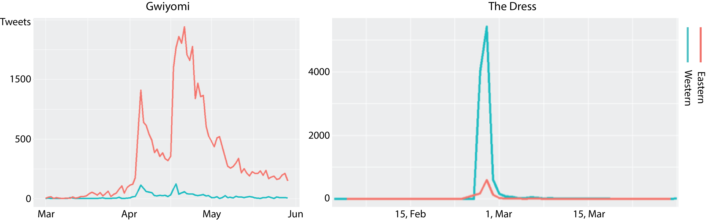
Western vs Eastern
Let us review on the formula that we are using. We define the value as “Influence Factors”.
influence_{West\ to\ East}\dfrac{Eastern\ users\ retweet / Total\ eastern\ users}{Western\ users\ retweet / Total\ western\ users}
influence_{East\ to\ West}\dfrac{Western\ users\ retweet / Total\ western\ users}{Eastern\ users\ retweet / Total\ eastern\ users}
Although twitter is a predominantly western social media platform, as the influence factor equation makes use of ratio instead of absolute values, the ratio of twitter users participating is representative of the population’s participation in a trend.
In our analysis, we count the number of tweets within one week after the trend breaks out. And the Influence Factors are plotted in the graph below.
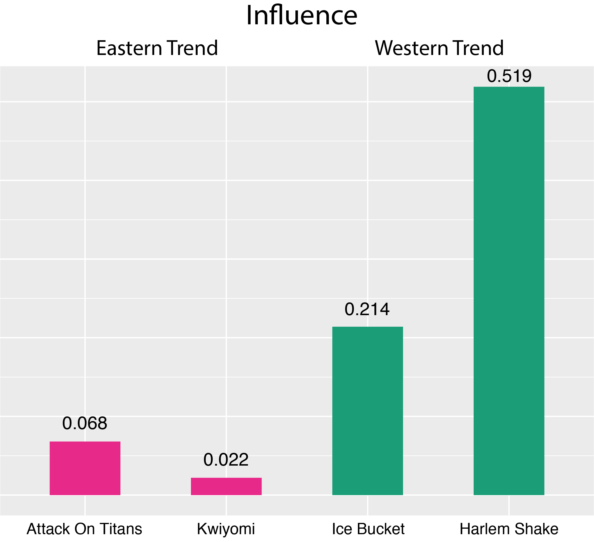
This graph indicates that Western trends are 5-10 times more influential than the Eastern trends. To make the values understandable, we drew a cartogram where the area of the continents is proportional to the Influence Factors:
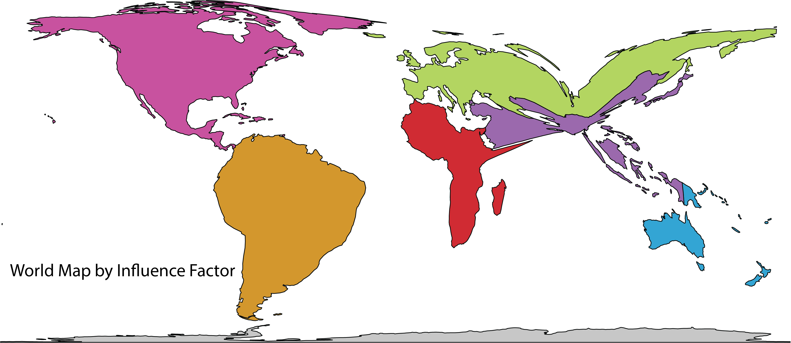
By the metrics mentioned above, the western countries are enlarged and the area of eastern countries shrink significantly. Do note that Africa is also enlarged because all western countries share the same Influence Factor based on our analysis. (Antarctica is not taken into our analysis and thus remains unchanged.)
However, if we look into the data and check the nationality of the twitter users, we will easily find out that the eastern trends are even less influential than we see above.
Take Kwiyomi, an Eastern trend for an example. In the western countries, only 11% of the twitter users who tweets about Kwiyomi are really western people. The other 89% of the twitter users are actually eastern people who travel to western countries for reasons like study or work. Whereas for western trends in eastern countries, 99% of the people who talk about it are still eastern people. This reveals the fact that very few western people are influenced by eastern trends. And the eastern trends only propagate within the eastern group. Below is the corrected cartogram:
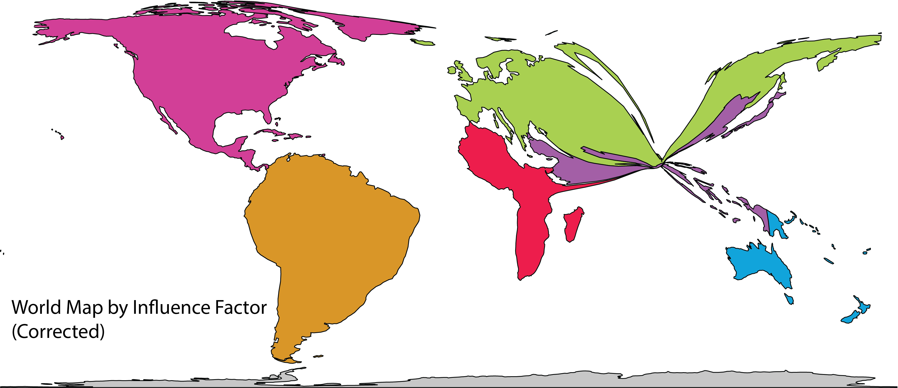
After the correction, eastern countries reduce to just one point. And the contrast between the western world and the eastern world is clearly seen.
With all the analysis done above, we now conclude that the western trends are more influential than the eastern trends. And from this conclusion, we can further infer that western countries are more culturally popular and powerful than the eastern cultures.
The next step would to be investigating on why there is a such difference. But, since the main purpose of this report is solely to define the existence of such a pattern, a comprehensive analysis on why and how it comes into being will not be needed.
Here, we consider three factors that might affect the popularity of a trend. The economy of the origin country, the population of the origin country and English proficiency of the origin country.
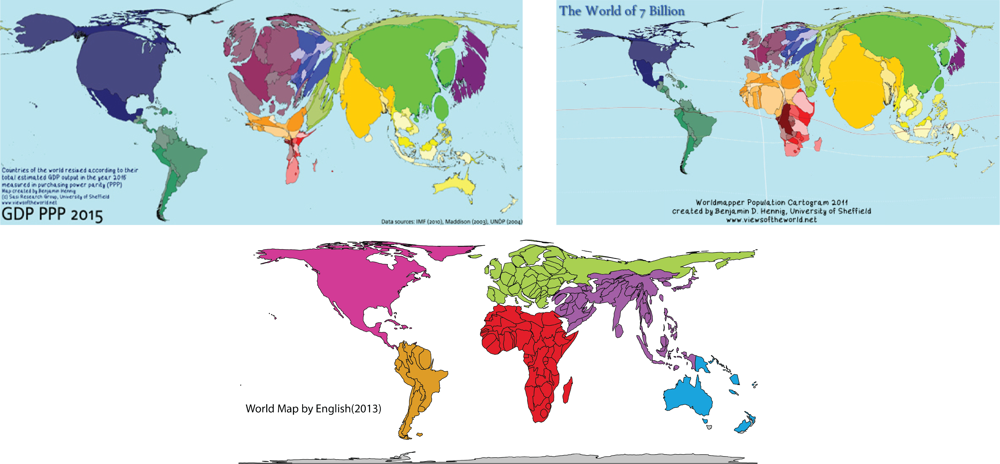
It turns out that the pattern of the economy and population strays too much from the pattern of the Influential factor, but the pattern of the English proficiency conforms to the graph we previously have.
This result is reasonable because English is a universal language, so any trend based on it will be easier to pass around the globe. However, in the eastern countries where trends are mostly based on local languages, it would be harder for the trends to penetrate the western world.

This trend involves the pouring of a bucket of ice over the participant’s head. The participant then “nominates” or “challenges” at least 3 other people to do the same (hence the name of the trend). This trend was started to promote awareness of the disease amyotrophic lateral sclerosis (ALS) and was supported by the ALS Association. In the summer of 2014, it went viral globally, helping to raise awareness for the disease as well as raising $115 million dollars for charity.
Spread of "Ice Bucket Challenge" over time
Active spreading of the “Ice Bucket Challenge” began in July 2014, when celebrities started doing the challenge and ‘nominating’ others to do so as well. This means that this ‘western trend’ had spread globally within the span of just 1 month!
We can see this in the time vs longitude graph below. On August 2014, the ALS Ice Bucket Challenge became a worldwide phenomenon, and continued to trend for the next few months. The ice bucket challenge is what we categorise as a "recurring trend", with the virality of the trend picking up every year during ALS Awareness Month.
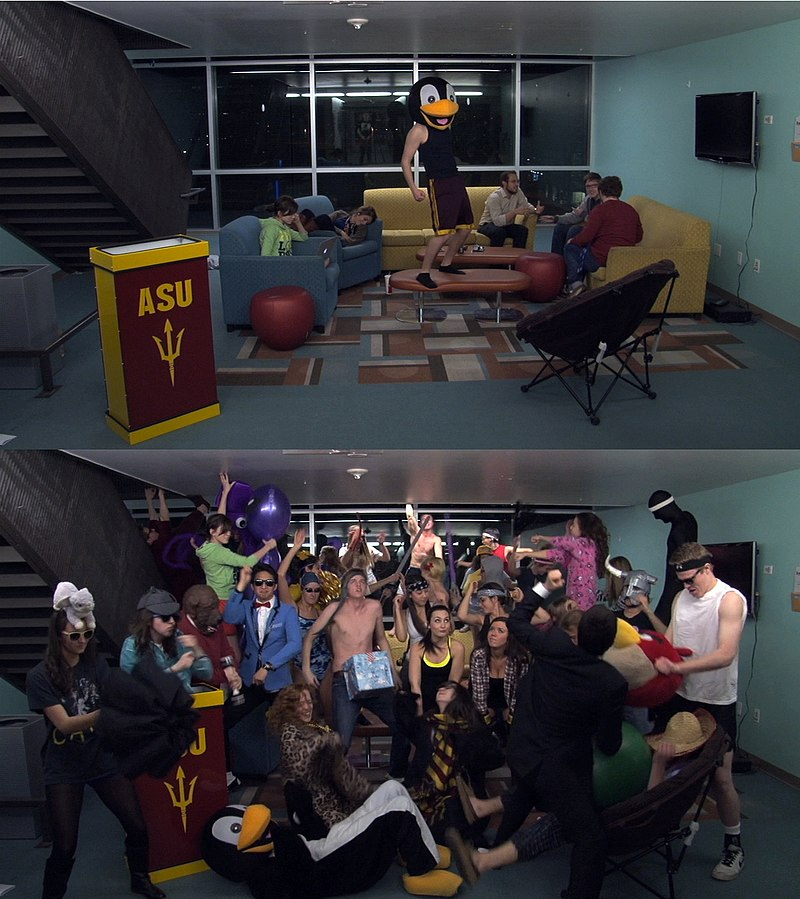
The Harlem Shake is a viral trend in a form of a video utilizing a song of the same name. The video starts off with a single participant dancing with onlookers pretending to be ignorant of his presence, after 15s the beat is dropped and the video cuts to a group of participants flailing around to the beat of the song.
The trend started on 30th Jan 2013 when Youtube Star ‘DizastaMusic’ uploaded a video featuring the meme. This video started a viral trend of people uploading their own version of the "Harlem Shake" to YouTube. The name harlem shake actually comes from a hip-hop dance style which the song is referencing, though the ‘dance’ in the trend is wildly different.
Spread of "Harlem Shake" over time
This trend became global shortly after it was first released. It took only 9 days (30th Jan - 8th Feb) or 0.23 Months for this ‘Western’ trend to spread globally.
In the time vs longitude graph below. We can see the spread of the trend from when it was uploaded up till it hit "global status" (the curve in each of the blocks for each continent). Previous tweets on 'harlem shake' was referencing the dancestyle and not the trend.
The Harlem Shake was extremely viral and spread really quickly however, once the hype died down, it never resurfaced and this western trend was cast aside as a "dead meme". So even though it had a huge growth rate, it was not a recurring trend
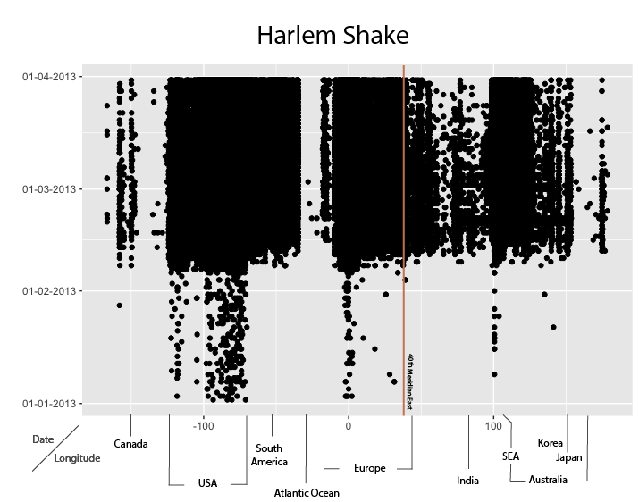
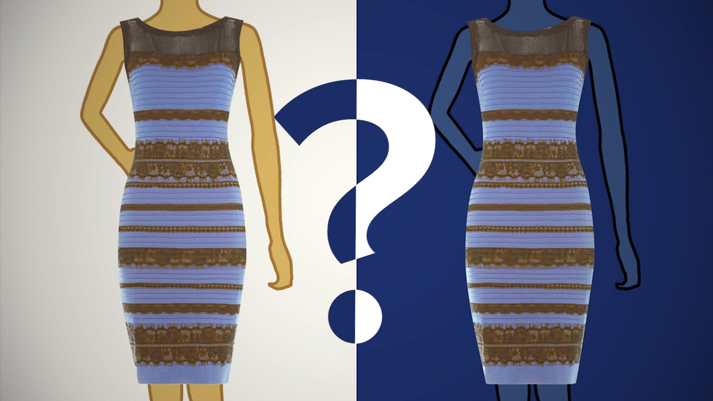
"The dress" refers to an image of a dress posted on twitter when a user was showing off her shopping. It started trending when followers disagreed on whether the color of the dress was “blue and black” or “white and gold”. This became a trend overnight as constant retweets and arguments ensued over the social media platform and even was the subject of scientific debate on human color perception.
Spread of "The Dress" over time
The trend became widespread on 26th Feb when the infamous picture of the dress was posted onto tumblr. Due to its bewildering properties and the illusion it played on people's mind, the picture trended on Twitter as well and was tweeted and retweeted by many the moment it was released, allowing it to hit 'global status' on the same day it was posted. The dress is our fastest growing trend, hitting global reach in just under 6 hours
The post originated in New York, making it a western trend. It has a huge growth rate, hitting up to 5500 tweets a day within 2 days. However, it also has a large decay rate, dropping off the charts within the week.
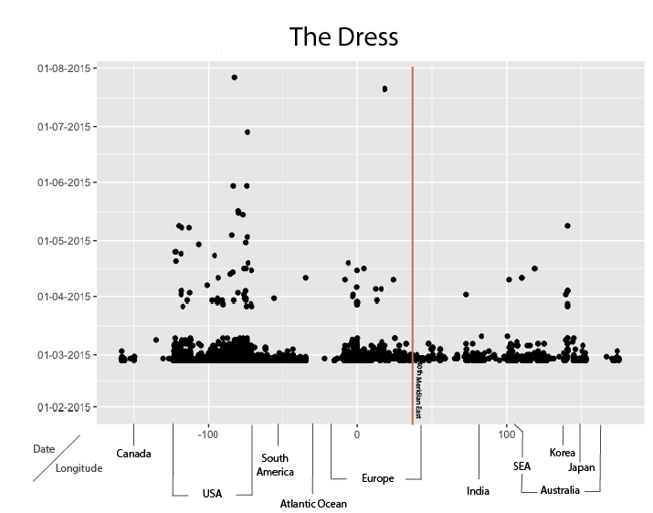
The Gwiyomi Song (귀요미 송), is a song by Hari, a K-pop star from South Korean. The single was released on 18 Feb 2013 and was popularized by a local variety TV show. The meme was originally created by another K-pop star Jung Ilhoon in 2012, when he counted numbers in a “cute“ way on a reality TV show, to which Hari used as inspiration for her song.
The trend was spread as Hari’s fans recreated their own version of the chorus and uploaded it to social media. The trend was very popular in Asia, with most from South-east Asia. It was even reported to be popular in China (source).
Spread of "Gwiyomi Song" over time
As seen in the Time vs Longitude scatterplot above, the trend was already popular before Hari released her single and hit ‘global’ popularity in Apr 2013 with the surge in tweets. This means that this ‘Eastern’ trend took 2 months to spread globally (or 4 months if counted from the original trend).
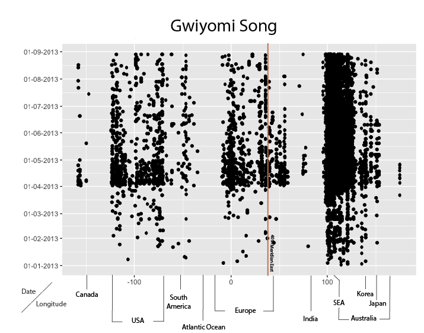
Attack on Titan (Japanese: 進撃の巨人 Shingeki no Kyojin) is an animated TV series adapting content from the first 8 volumes of Hajime Isayama's award-winning manga of the same name. The manga was well received in Japan and a TV anime series was announced in Dec 2012. The first episode aired on 7th April 2013, and became a hit amongst both the Japanese and international anime communities.
Spread of "Attack on Titan" over time
The release on the promotional video in Dec 2012, resulted in a surge in tweets from Japan and a handful from the rest of the world. After which, the hype mostly stayed in Japan until April when the first episode was released. From that point, tweets came from all over the world. Thus, this ‘Eastern trend’, though popular, took over 4 months to spread globally..
As Attack on Titan is a TV series, new episodes air every week, and with it comes a new flurry of tweets about the show, thus we can catergorise this trend as a recurring trend.